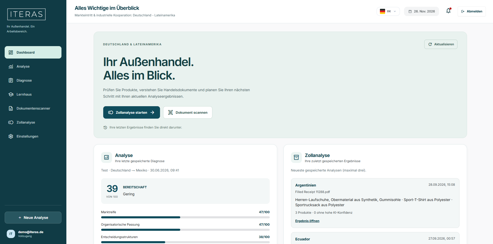
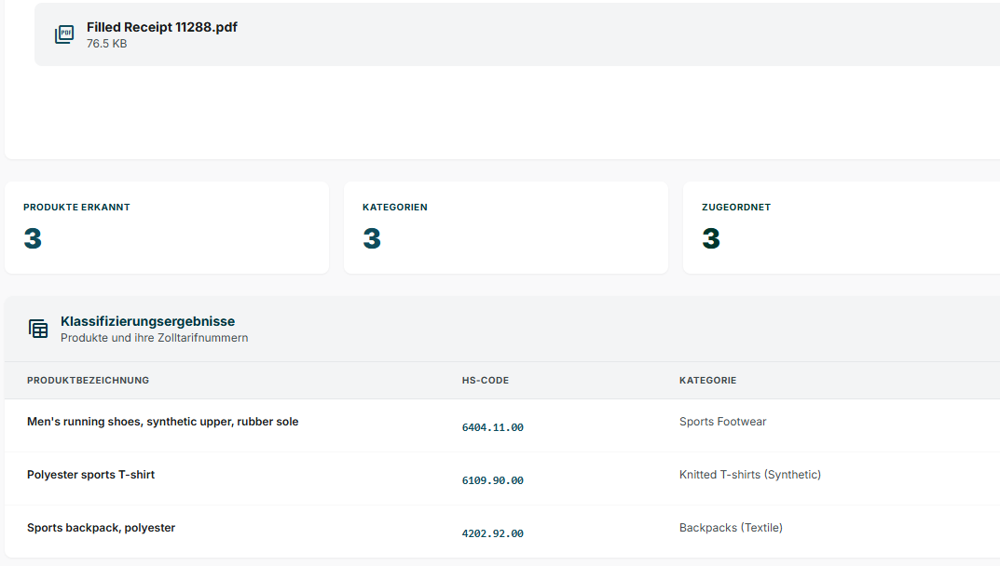
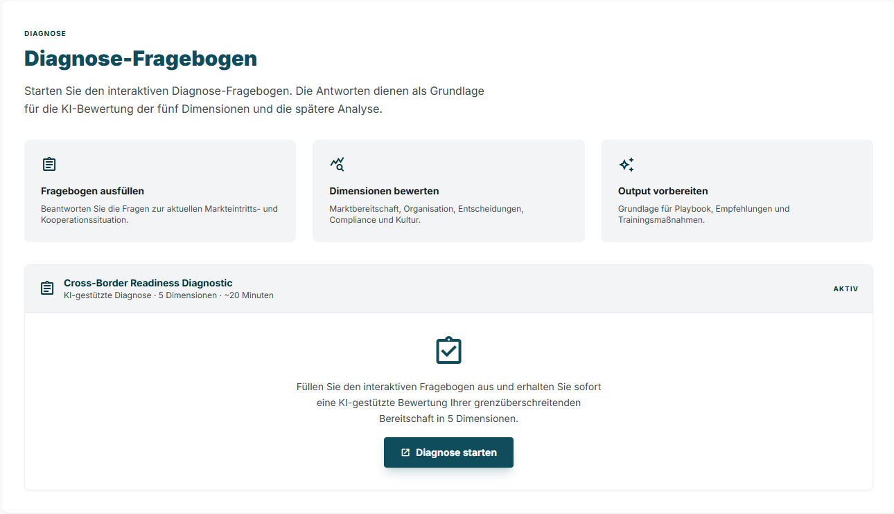
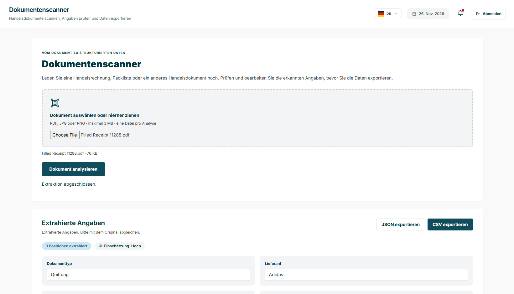

Eine Plattform für echte grenzüberschreitende Zusammenarbeit
Risiken identifizieren, Teams aufeinander abstimmen und Markteintritte zwischen Deutschland und Lateinamerika erfolgreich umsetzen.

Ihr Dashboard
Ein Einstieg.
Ihre nächsten Schritte im Blick.
Nach der Anmeldung landen Sie in Ihrem persönlichen Arbeitsbereich. Hier finden Sie Ihre letzten Ergebnisse und starten direkt die nächste Analyse.
Das Dashboard verbindet die verfügbaren Werkzeuge mit Ihren gespeicherten Ergebnissen. Welche Funktionen Sie nutzen können, richtet sich nach Ihrem Kontozugang.
- Letzte Zollanalysen
- Gespeicherte Ergebnisse mit Zielland und Dokumentbezug wieder öffnen.
- Diagnoseergebnisse
- Im Vollzugang die letzte Diagnose mit Bereitschaft, Dimensionen und nächstem Handlungsschritt überblicken.
- Direkter Einstieg
- Eine Zollanalyse starten oder im Vollzugang ein Handelsdokument scannen.
Zollanalyse für zielmarktbezogene Tarifklassifikation
Die Plattform verarbeitet gescannte Rechnungen, erkennt relevante Produktinformationen und ermittelt für die ausgewählten Exportprodukte die passende Zolltarifklassifikation auf Basis des Ziellandes.
Zu jedem erkannten Produkt erhalten Teams direkt die zugehörigen tarifrelevanten Informationen. Extrahierte Produkte und Handelsdaten können zudem in der Plattform gespeichert bleiben, damit spätere Fälle schneller weiterbearbeitet und verglichen werden können.
Produkte erkennen
Rechnungen scannen und relevante Produktdaten strukturiert erfassen.
Tarifcode zuordnen
Für Produkte die passende Zolltarifklassifikation je nach Zielmarkt ermitteln.
Daten weiter nutzen
Erkannte Produkte in der Plattform speichern und für spätere Analysen wiederverwenden.

Erkannte Produktdaten bleiben dokumentiert und können für spätere Analysen wiederverwendet werden.

Ergebnisse werden in konkrete Handlungsfelder übersetzt, damit Teams gezielt weiterarbeiten können.
Diagnose und Analyse für fundierte Entscheidungen
Die Plattform erfasst Antworten strukturiert, bewertet die Bereitschaft für grenzüberschreitende Zusammenarbeit und macht sichtbar, wo operative, organisatorische und marktbezogene Lücken bestehen.
Aus den Ergebnissen entsteht eine verständliche Analyse mit klaren Prioritäten, damit Unternehmen Risiken früher erkennen, Ressourcen gezielter einsetzen und nächste Schritte fundierter planen können.
Bereitschaft messen
Relevante Faktoren systematisch erfassen und strukturiert bewerten.
Risiken erkennen
Schwachstellen und kritische Handlungsfelder frühzeitig sichtbar machen.
Nächste Schritte ableiten
Analyseergebnisse in konkrete Prioritäten und Maßnahmen übersetzen.

Dokumentenscanner
Vom Handelsdokument zu bearbeitbaren Angaben.
Laden Sie Rechnungen, Packlisten oder andere Handelsdokumente als PDF, JPG oder PNG hoch. Der Scanner extrahiert die erkennbaren Angaben und stellt sie strukturiert dar.
- Angaben extrahieren
- Dokumentnummer, Beteiligte, Beträge, Währung, Produktpositionen und weitere erkennbare Informationen.
- Ergebnisse prüfen und bearbeiten
- Extrahierte Angaben mit dem Original abgleichen und vor der weiteren Nutzung korrigieren.
- Strukturiert exportieren
- Die bearbeiteten Ergebnisse als JSON oder CSV herunterladen.
Lernhaus
Zollwissen verstehen.
Zusammenhänge erkennen.
Das Lernhaus ergänzt die Werkzeuge um verständliche Begriffserklärungen und geplante Lernangebote für das Geschäft zwischen Deutschland und Lateinamerika.
- Glossar
- Begriffe zu Zoll, Import, Export und internationalem Geschäft nachschlagen – mit Suche, Kategorien und alphabetischer Übersicht.
- Workshops & Lektionen In Vorbereitung
- Geplante Lernangebote zu Zollprozessen und grenzüberschreitender Zusammenarbeit. Lernfortschritt wird erst mit verfügbaren Lektionen nutzbar.
ITERAS kennenlernen
Mit der Zollanalyse starten.
Lernen Sie den Ablauf mit einem persönlichen Demozugang kennen: anmelden, ein Zielland auswählen, eine Produktliste hochladen und die Ergebnisse prüfen.
Ihr Demozugang
- Persönlicher Login und Einstieg über das Dashboard
- Zollanalyse für die verfügbaren Zielländer
- Zugriff auf Ihre gespeicherten Zollanalysen
- Weitere Werkzeuge als gesperrte Vorschau sichtbar
Diagnose, Analyse, Dokumentenscanner und das Lernhaus gehören zum Vollzugang. Workshops und Lektionen sind noch in Vorbereitung.